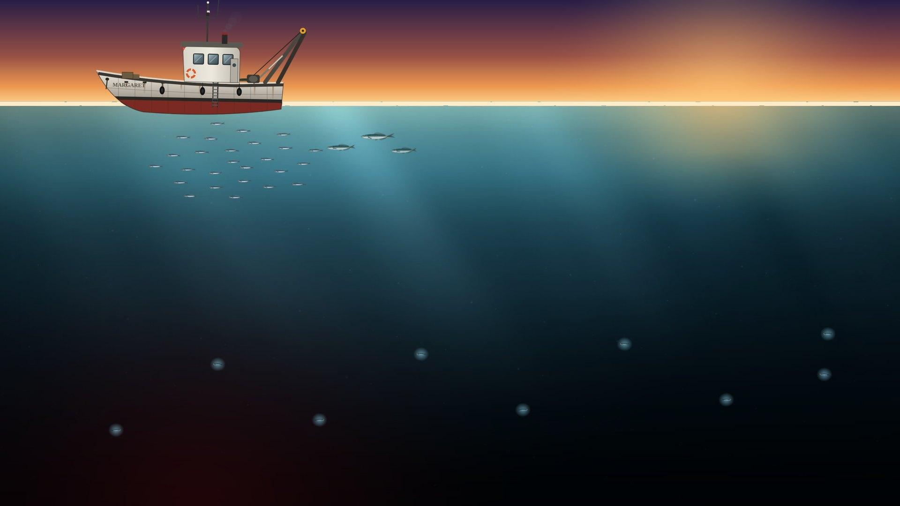
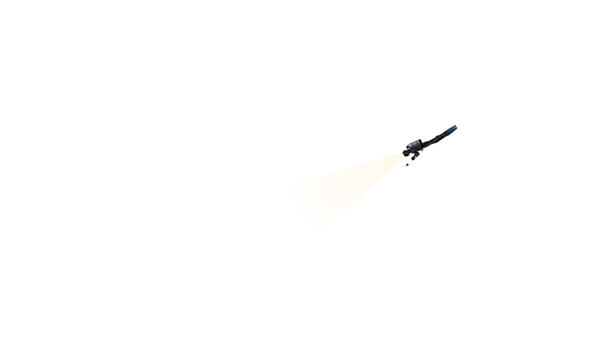

Earl the DiverEarl the DiverThe sea pays, if you look deep enough
0 msunlight200 mtwilight1,000 mmidnight4,000 mthe abyss
0000mLoading


The water keeps moving while you write.
The yard will paint it on the sub's hull, and on every hull after it.
↑ ↓ or the wheel: 1 m · with Shift: 10 m · Esc to cancel